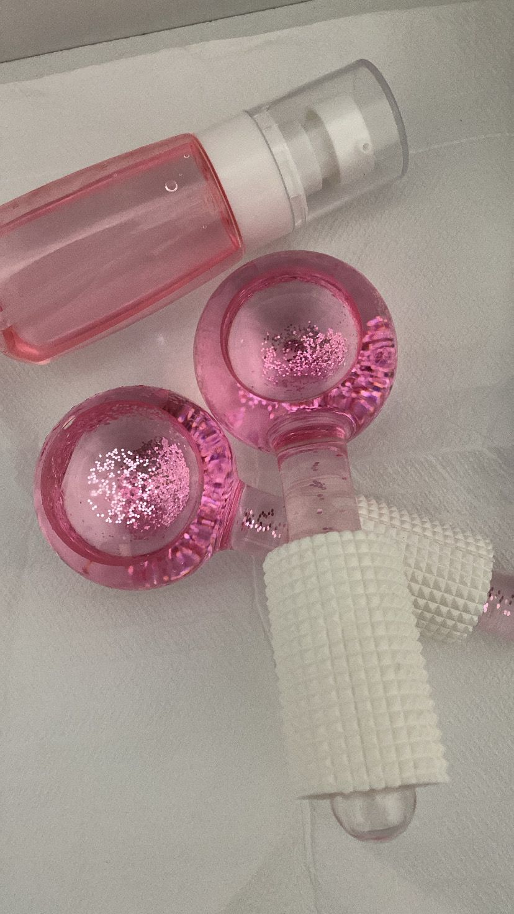
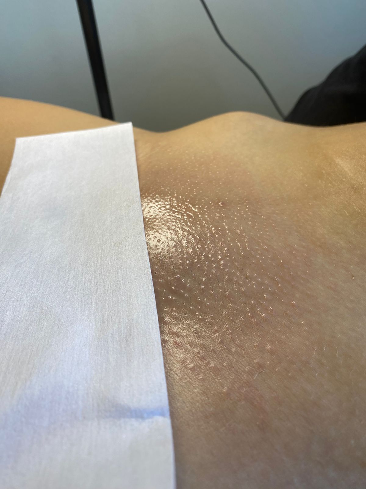
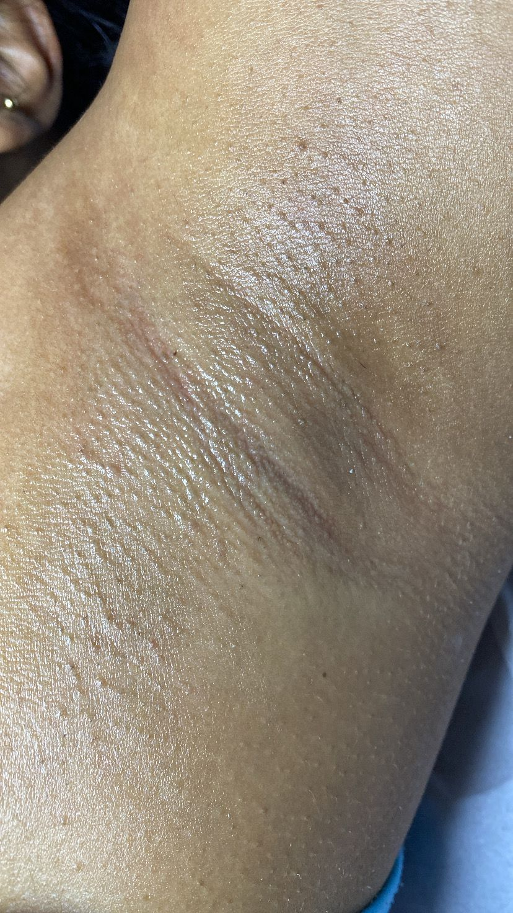
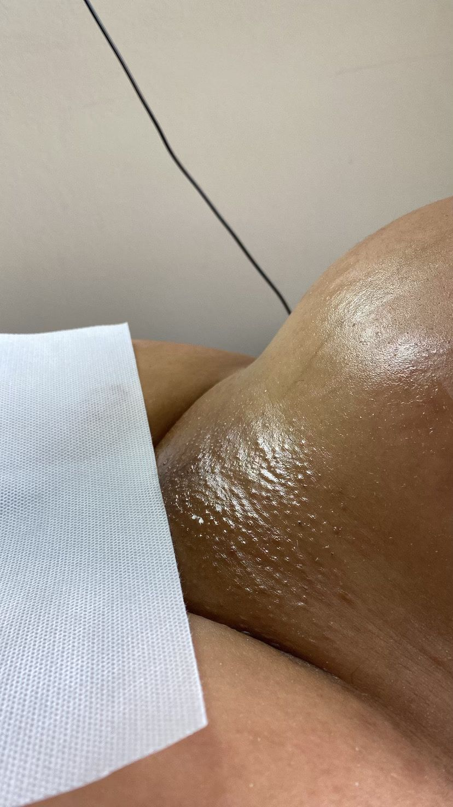

Julia Ribeiro
Especialista em Epilação
Seja Bem Vindo!
Olá, seja bem-vindo ao meu portfólio! Meu nome é Júlia Ribeiro, sou especialista em epilação e estou atuando na área há pouco tempo. Embora minha jornada tenha começado recentemente, já adquiri uma sólida base de conhecimentos e habilidades, sempre buscando oferecer o melhor atendimento e resultados de alta qualidade para meus clientes. Tenho paixão pelo que faço e me dedico a proporcionar uma experiência confortável e satisfatória para todos. Explore meu portfólio e conheça mais sobre o meu trabalho e os serviços que ofereço.
Vantagens da Epilação

A epilação remove os pelos pela raiz, proporcionando uma pele suave por mais tempo do que a depilação com lâmina. Métodos como cera ou laser fazem com que os pelos demorem mais para crescer. Com o uso contínuo, os pelos crescem mais finos e em menor quantidade.
Diferente da lâmina, a epilação não corta a pele, diminuindo o risco de cortes e irritações. Técnicas adequadas de epilação e cuidados pós-epilação ajudam a prevenir pelos encravados, trazendo mais conforto e segurança.
Além disso, a epilação permite uma remoção precisa, ideal para áreas pequenas como sobrancelhas, oferecendo uma aparência suave e prática para o dia a dia ou eventos especiais.
Mais um Pouco do Trabalho


